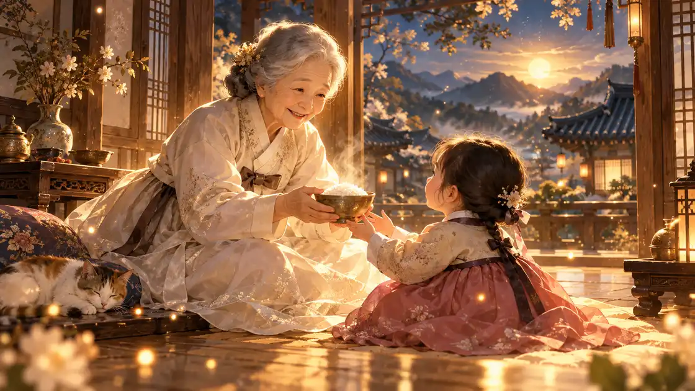

이 게시물은 쿠팡 파트너스 활동의 일환으로, 이에 따른 일정액의 수수료를 제공받습니다.
할머니 꿈 해몽 길몽

할머니가 나오는 꿈은 해몽에서 보살핌과 복을 뜻하는 길몽으로 봅니다. 어릴 적 따뜻하게 챙겨 주던 할머니의 모습처럼, 어려울 때 도움을 받거나 집안이 편안해진다는 뜻으로 읽어 왔습니다.
특히 돌아가신 할머니가 웃으며 찾아오는 꿈은 조상이 나를 돌봐 준다는 뜻으로 반겨 왔습니다. 할머니의 표정과 하신 일에 따라 풀이가 달라지니 아래에서 내 꿈과 가까운 장면을 찾아보세요.
동네보살 한마디
할머니가 꿈에 나오면 보살핌과 복을 뜻해요. 할머니가 밥을 차려 주거나 쓰다듬어 주면 집안이 편안하고 어려울 때 도움 받을 일이 생긴다고 읽어요. 돌아가신 할머니가 웃으며 오시면 조상이 돌봐 준다고 좋게 쳤어요. 할머니가 근심 어린 눈으로 보시면 내 몸이 많이 고단하다는 뜻이에요. 오늘은 따뜻한 밥 한 끼를 제대로 챙겨 드세요.
할머니 꿈, 장면별 풀이
돌아가신 할머니가 나오는 꿈
돌아가신 할머니가 꿈에 찾아오시는 꿈은 조상이 나를 돌봐 준다는 뜻으로 봅니다. 중요한 일을 앞두고 꾸었다면 든든한 응원으로 받아들이면 좋습니다.
할머니가 웃는 꿈
할머니가 환하게 웃는 꿈은 집안에 경사가 있거나 걱정하던 일이 잘 풀린다는 뜻입니다. 기쁜 소식을 기다려 봐도 좋습니다.
할머니가 밥을 차려 주는 꿈
할머니가 밥상을 차려 주는 꿈은 먹을 복과 재물이 들어온다는 뜻으로 풉니다. 주변에서 도움을 받을 일이 생길 수 있습니다.
할머니가 말없이 바라보는 꿈
할머니가 아무 말 없이 바라보기만 하는 꿈은 내 생활을 한 번 돌아보라는 뜻으로 읽습니다. 몸이 고단하다면 쉬어 가라는 신호이기도 합니다.
할머니가 무언가를 건네주는 꿈
할머니가 물건이나 돈을 건네는 꿈은 귀한 도움이나 재물이 들어온다는 길몽입니다. 받은 것이 무엇이었는지 기억해 두면 좋습니다.
할머니와 대화하는 꿈
할머니와 이야기를 나누는 꿈은 고민에 대한 답을 얻는다는 뜻입니다. 꿈속 말이 기억난다면 적어 두세요.
할머니가 걱정스러운 얼굴인 꿈
할머니가 근심 어린 얼굴로 보시는 꿈은 내가 많이 지쳐 있다는 뜻으로 봅니다. 따뜻한 밥 한 끼를 제대로 챙겨 드세요.
할머니 집에 놀러 가는 꿈
어릴 적 살던 할머니 집을 찾아가는 꿈은 마음이 편히 기댈 곳을 찾고 있다는 뜻으로 풉니다. 요즘 바쁘게 지냈다면 하루쯤은 좋아하는 음식을 먹으며 천천히 쉬어 가는 날을 만들어 보세요.
할머니가 손을 잡아 주는 꿈
할머니가 내 손을 꼭 잡아 주는 꿈은 고민하던 일에 든든한 도움이 들어온다는 반가운 뜻으로 읽습니다. 혼자 끌어안고 있던 일이 있다면 믿을 만한 사람에게 먼저 이야기를 꺼내 보세요.
할머니가 머리를 쓰다듬어 주는 꿈
머리를 쓰다듬어 주는 장면은 그동안 애쓴 마음을 알아주고 다독여 준다는 뜻으로 풉니다. 스스로에게도 수고했다는 말을 한 번 건네 보세요. 마음이 한결 가벼워집니다.
할머니가 옷이나 이불을 챙겨 주는 꿈
할머니가 옷을 입혀 주거나 이불을 덮어 주는 꿈은 몸을 따뜻하게 챙기라는 다정한 신호로 읽습니다. 날이 쌀쌀해지는 때라면 잠자리와 옷차림을 조금 더 포근하게 바꿔 보세요.
할머니와 함께 음식을 만드는 꿈
할머니와 나란히 앉아 음식을 만드는 꿈은 집안에 화목한 일이 생기고 가족이 한자리에 모인다는 뜻으로 풉니다. 가족과 함께 밥 한 끼 먹을 약속을 잡아 보시면 좋습니다.
할머니가 젊은 모습으로 나오는 꿈
할머니가 사진 속 젊은 시절 모습으로 나타나는 꿈은 집안에 새 기운이 돈다는 뜻으로 읽습니다. 새로 시작하려던 일이 있다면 이번에 첫걸음을 떼 보세요.
할머니가 길을 알려 주는 꿈
할머니가 손짓으로 길을 가리켜 주는 꿈은 망설이던 선택에 실마리가 보인다는 뜻으로 풉니다. 마음이 먼저 끌리는 쪽이 어디인지 조용히 적어 보면 답이 또렷해집니다.
마음 쪽에서 보면
할머니 꿈은 마음이 지치거나 누군가의 보살핌이 그리울 때 자주 나타납니다. 어릴 적 기억 속 따뜻함이 지금의 나를 다독이려 꿈으로 찾아오는 경우가 많습니다.
돌아가신 할머니가 그리운 마음이 컸다면 꿈은 그 마음을 달래 주는 자리이기도 합니다. 오늘은 가족에게 안부를 전하거나 할머니를 떠올리며 감사한 마음을 가져 보세요.
옛 해몽에서는
한국민족문화대백과사전의 '꿈' 항목은 민간에서 전해 오는 해몽을 몸에 관한 것, 사람의 일에 관한 것, 자연물, 집, 물건, 동물, 식물로 나누어 소개합니다. 이 가운데 사람의 일에 관한 해몽에 '조상이 나타나서 음식을 권하거나 말을 하면 좋은 일이 있다'는 풀이가 실려 있습니다. 돌아가신 할머니가 밥을 차려 주거나 말을 건네는 꿈을 길몽으로 반기는 풀이가 바로 이 생각과 이어져 있습니다.
같은 항목은 『삼국유사』와 『용재총화』에 실린 해몽 이야기를 들며, 옛사람들이 꿈을 앞일을 미리 알려 주는 표시로 여겨 풀이해 왔다고 설명합니다. 집안 어른, 그중에서도 늘 나를 먹이고 챙겨 주던 할머니가 꿈에 나오는 일을 집안이 나를 지켜 준다는 이야기로 받아들인 것도 이런 전통 속에서 자연스러운 일이었습니다.
백과사전은 이런 해몽이 여러 사람의 체험에서 생겨난 것이라 일정한 이론적 근거를 가지지는 않는다고도 덧붙입니다. 그러니 할머니가 걱정스러운 얼굴로 나왔다고 해서 마음 졸일 필요는 없습니다. 가까운 사람을 한 번 더 챙기고, 내 몸도 돌보라는 다정한 당부로 받아들이면 충분합니다.
연구로 보면
돌아가신 가족이 나오는 꿈은 연구에서도 흔한 꿈으로 꼽힙니다. 미국 뉴욕의 호스피스 기관 연구진(Wright, Kerr 외)이 2014년 학술지 American Journal of Hospice and Palliative Medicine에 낸 연구는 가족을 떠나보낸 278명에게 꿈에 대해 물었는데, 58%가 돌아가신 가족의 꿈을 꾼 적이 있다고 답했습니다. 대부분은 꿈이 즐거웠거나 즐거움과 아픔이 함께 있었다고 답했고, 아프기만 했다는 사람은 적었습니다.
같은 연구에서 자주 나온 꿈 내용은 함께했던 즐거운 기억, 병에서 벗어나 편안해 보이는 모습, 평화로워 보이는 모습, 무언가 말을 전해 주는 장면이었습니다. 응답자의 60%는 꿈이 슬픔을 견디는 데 영향을 주었다고 답했고, 그 영향으로 떠난 사람을 받아들이는 마음, 위로, 삶의 질 같은 것을 들었습니다. 옛 해몽에서 조상이 말을 건네는 꿈을 반긴 것과 닮은 대목입니다.
2026년 학술지 Sleep Medicine에 실린 Mamat 연구진의 체계적 문헌 고찰은 이 주제의 연구 110편을 모아 살폈습니다. 돌아가신 가족의 꿈은 여러 문화에서 두루 나타나고, 위로와 길잡이, 이어져 있다는 느낌이 흔한 주제였으며, 꿈이 준 영향은 대체로 긍정적이었다고 정리했습니다. 캐나다 브록대학교의 Black 연구진도 2021년 학술지 Omega에 배우자를 떠나보낸 216명의 꿈을 분석해, 이런 꿈이 감정을 다독이고 떠난 사람과의 유대를 이어 가며 슬픔에 적응하도록 돕는 역할을 할 수 있다고 보고했습니다.
다만 이 연구들은 가족을 떠나보낸 사람들이 기억해 답한 설문과 꿈 기록이라 꿈이 왜 생기는지까지 밝혀 주지는 않고, 살아 계신 할머니가 나오는 꿈을 따로 다룬 연구도 찾기 어렵습니다. 그래도 할머니 꿈을 꾼 뒤 마음이 따뜻했다면 그 느낌을 그대로 간직하시고, 살아 계신다면 오늘 안부 전화를 한 통 드려 보세요.
이 꿈을 꾼 날 해 볼 일
- 오늘은 따뜻한 밥 한 끼를 제대로 챙겨 드세요.
- 가족에게 짧은 안부 문자를 보내 보세요.
- 꿈속에서 들은 말이 있다면 메모해 두세요.
자주 묻는 질문
돌아가신 할머니 꿈은 좋은 꿈인가요?
네, 돌아가신 할머니가 찾아오시는 꿈은 조상이 돌봐 준다는 뜻으로 반겨 온 길몽입니다. 특히 웃으며 오시는 꿈을 좋게 봅니다.
할머니가 밥을 주는 꿈은 무슨 뜻인가요?
먹을 복과 재물이 들어오고 주변의 도움을 받는다는 뜻으로 풉니다.
할머니가 아무 말도 안 하는 꿈은요?
내 생활을 한 번 돌아보고 쉬어 가라는 뜻으로 읽습니다.
할아버지 꿈과 같은 뜻인가요?
비슷하게 보살핌과 복을 뜻하지만, 할아버지 꿈은 집안의 큰 결정이나 지혜를, 할머니 꿈은 따뜻한 보살핌과 살림의 복을 더 많이 봅니다.
돌아가신 가족의 꿈을 꾸는 사람이 많은가요?
가족을 떠나보낸 278명을 조사한 2014년 미국 연구에서 58%가 돌아가신 가족의 꿈을 꾼 적이 있다고 답했습니다. 대부분은 즐겁거나 위로가 되는 꿈이었다고 했으니 아주 흔하고 자연스러운 꿈입니다.
참고한 자료
- 한국민족문화대백과사전, '꿈' 항목(서대석 집필, 한국학중앙연구원)
- Wright S.T., Kerr C.W., Doroszczuk N.M. 외 (2014). The impact of dreams of the deceased on bereavement: a survey of hospice caregivers. American Journal of Hospice and Palliative Medicine 31(2):132-138
- Mamat Z., Owaisi R.B., Alrai S. 외 (2026). Dreams of the deceased: A scoping and mixed-methods systematic review. Sleep Medicine 140:108787
- Black J., Belicki K., Piro R., Hughes H. (2021). Comforting Versus Distressing Dreams of the Deceased. Omega 84(2):525-550
함께 보는 꿈
해몽은 조상들이 꿈에 붙여 온 민간의 풀이입니다. 앞날을 정해 주지 않으니 좋은 꿈은 하루를 여는 기분으로, 언짢은 꿈은 한 번 더 조심하라는 신호 정도로 가볍게 받아들이세요. 같은 꿈이 오래 반복되거나 잠을 크게 설친다면 전문가와 상담해 보시길 권합니다.